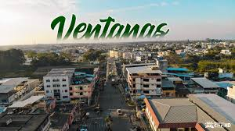
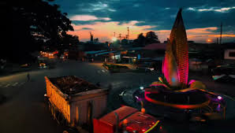

| HOME | GALERÍA | SITUACIÓN GEOGÁFICA | COSTUMBRES | SITIOS TURÍSTICOS |
|---|
Ventanas se encuentra en el centro occidente del Ecuador, dentro de la provincia de Los Ríos, formando parte de una extensa
llanura tropical.
Esta posición le otorga un clima cálido y húmedo 🌧️, ideal para la agricultura, especialmente el cultivo de maíz 🌽.
- Está atravesada por el río Zapotal, que divide la ciudad en dos parroquias urbanas y da vida a su paisaje urbano y rural 🏞️.
- Su configuración urbana se concentra en el centro, donde se ubican el malecón, la alcaldía y los principales espacios comerciales 🏙️.
La ciudad está rodeada por una red de ríos y esteros que enriquecen su ecosistema:
- Ríos principales: Chipe, Calabí, Lechugal, Suquibí, Oncebí, Bobo, Zapotal, Sibimbe y Las Piedras
- Esteros destacados: Lechugalito, La Guatuza, Carbomalo, Aguas Frías, Guandubi y Yuyumbí.
Estos cuerpos de agua no solo son vitales para la agricultura, sino que también ofrecen espacios de recreación y turismo local,
especialmente en época
de Carnaval 🎉.
🧭 Conectividad y entorno:
Ventanas está rodeada por ciudades clave como Quevedo, Babahoyo, Montalvo y Milagro, lo que la convierte en un punto de paso y conexión entre la
sierra y la costa ecuatoriana 🚐.
| SITUACION GEOGRAFICA | 📍 Características generales - Altitud: 24 m s. n. m. - Clima: Tropical lluvioso, con una temperatura promedio de 26 °C - Población (2025): Aproximadamente 53,000 habitantes - Gentilicio: Ventanense - Ubicación: A dos horas de Guayaquil y seis de Quito 🏙️ Identidad urbana y cultural: - Símbolos: Bandera verde y blanca con cinco estrellas; escudo con castillos, montaña y cuerno de la abundancia - Toponimia: El nombre “Ventanas” proviene de una antigua casa con muchas ventanas que servía como punto de encuentro comercial - Festividades: Celebraciones religiosas como el Sagrado Corazón de Jesús y la Cantonización el 10 de noviembre 🛤️ Economía y sociedad: - Actividades principales: Agricultura, comercio y ganadería - Área metropolitana: Forma parte del conglomerado de Babahoyo, funcionando como ciudad dormitorio para miles de trabajadores - Composición étnica: Predominantemente mestiza y montubia, con presencia afrodescendiente e indígena |
|---|
|  |  |